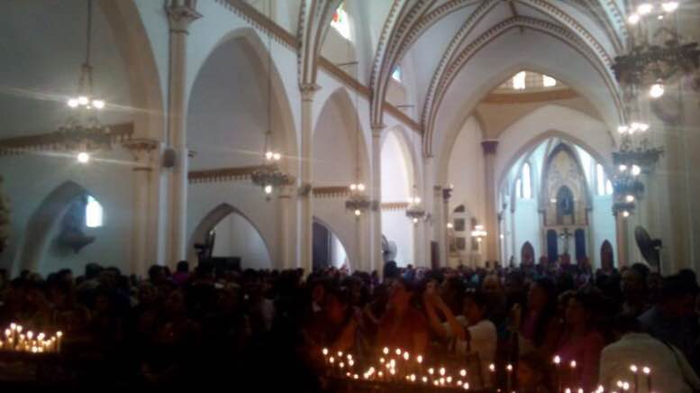

Nuestros Servicios
Coros Parroquiales
Conoce los diferentes coros que hacen vida en nuestra parroquia, sus objetivos, integrantes, lugar y sitio de reuniones, entre otras informaciones de interés.
Catequesis
Descubre los detalles de nuestra catequesis para niños, jóvenes y adultos, guiada por el Itinerario de Catequesis elaborado por la Comisión Episcopal de Catequesis y Pastoral Bíblica de Venezuela.
Voluntariado
Informate y súmate a nuestras actividades, en pro de ayudar con alimentos, ropa, medicinas, entre otros, a nuestros hermanos en situación de calle.
Despacho Parroquial
Información precisa y oportuna sobre Eucaristías, Confesiones, Bautizos, Matrimonios, Catequesis, Dirección Espiritual, Solicitud de Documentos, entre otros.
Galería
